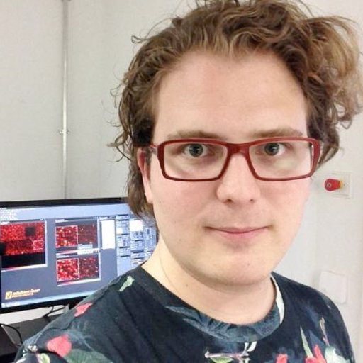
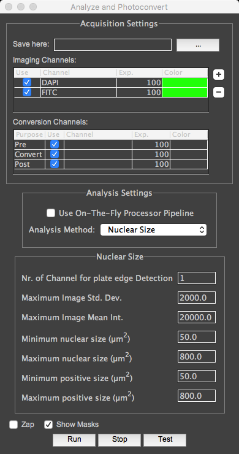
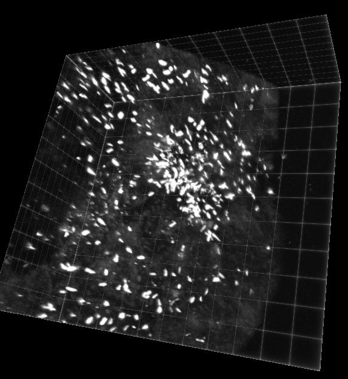

Various Microscopy Adventures
- Mouse Embryo Cilia (Markus)
- Adaptive Microscopy
- μManager-2.0-γ
Nico Stuurman, 2018-02-16
Mouse embryo ~9 days, Max. Int. Proj. Arl13b-GFP
Cilia mouse embryo in 3D Viewer
Adaptive Microscopy
A general framework for integration of imglib2 into image acquisition

Stephan Preibisch

David Hörl
David Hörl
BigStitcher-MM (https://github.com/PreibischLab/bigstitcher-mm)



